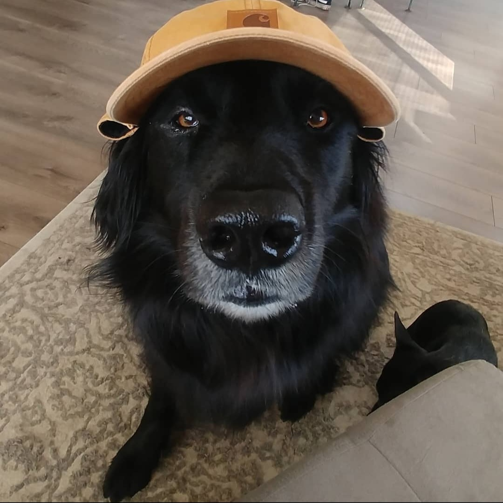

I find that having a nice balance of a heathy diet, plenty of excerise, and a sweet wardrobe add to one's cool factor, but if you really want to add some sweet steeze the real secret is going on adventures.
I love being a dog in Oregon! This place is great for going on adventures. Astoria, Cannon Beach, and Depoe Bay are some of my favorite places to go for a day at the coast. People give me lots of pats and treats, and running in the sand is a great way to work off the extra calories.
For a day in the mountains, I'm particularly fond of Tryon Creek. The sheer amount of smells can keep me busy for hours. There are tons of squirrels, rabbits, and birds. I even saw a deer once!
Whenever I go into the city I make sure to accessorize.
You want to keep it casual. I like to steal my dad's Carhartt hat. It's perfect for wearing around town.